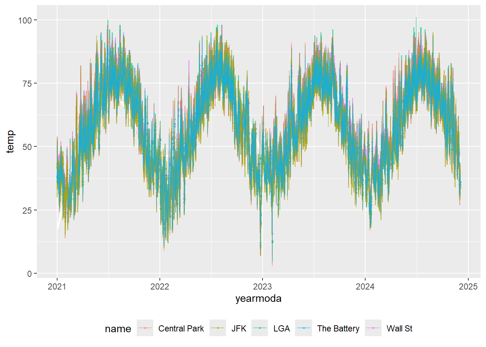
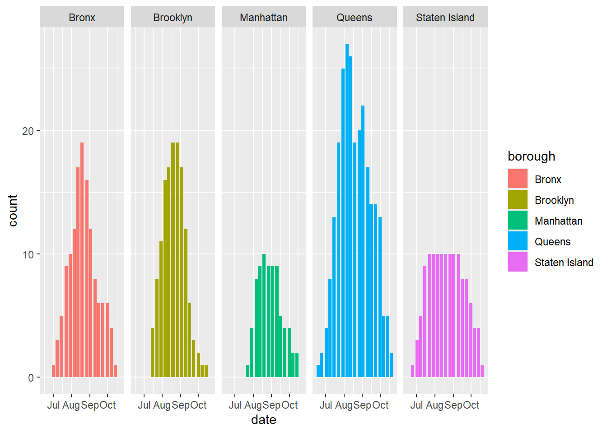
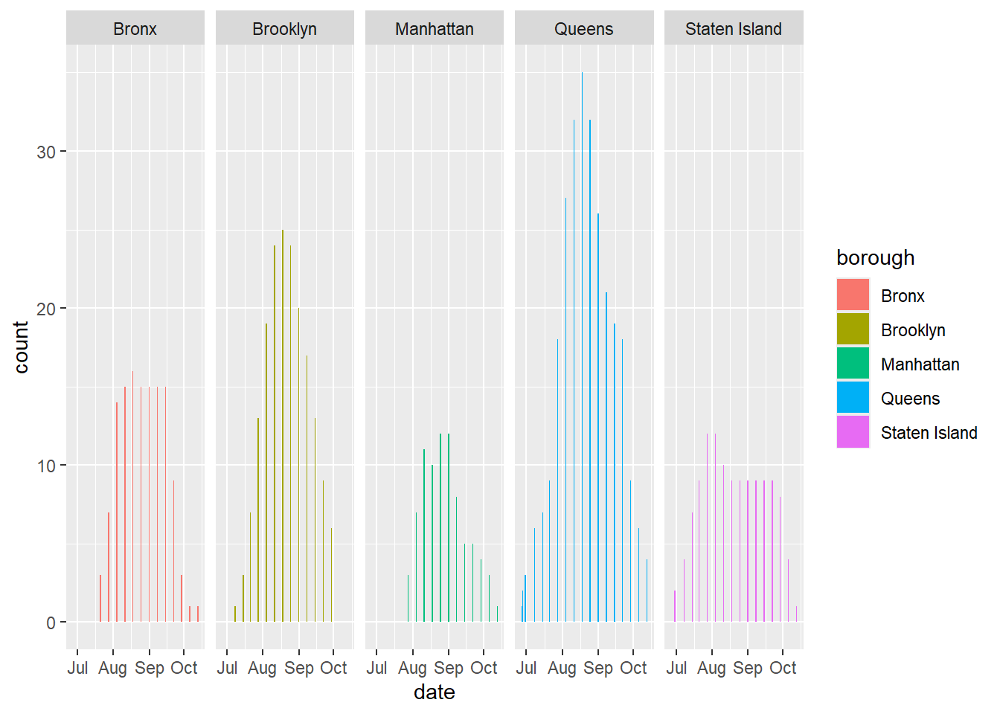
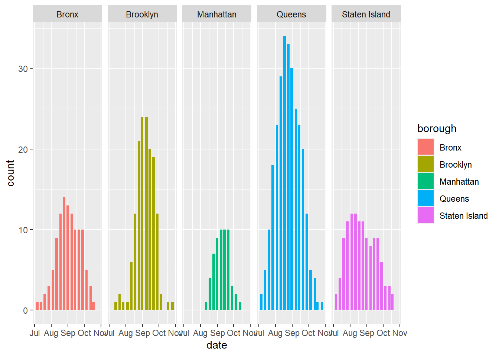
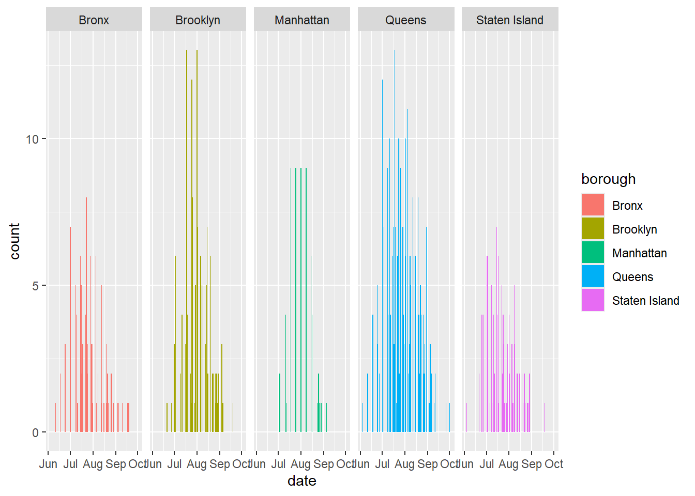
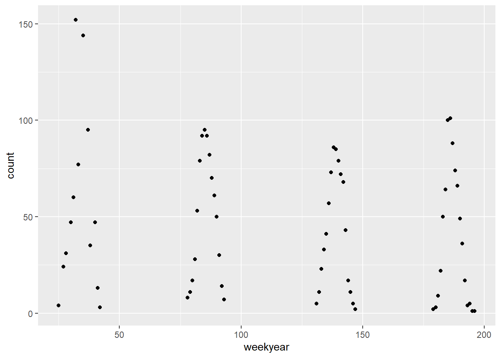
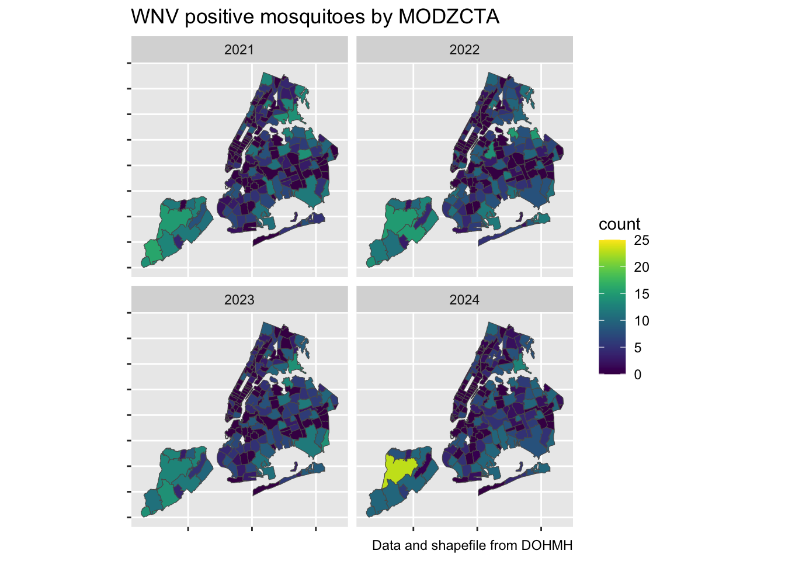

Buzzing Threats: Climate Change, Mosquitoes, and West Nile Virus in New York City
Motivation
Inspiration
Our group has a shared interest in addressing climate change, studying infectious diseases, and uniting over our mutual hatred of mosquito bites. Inspiration for this project stems from a few articles:
- A 2024 New York Times article highlights the rising concern for an increased number of mosquitoes infected with West Nile virus (WNV) over the summer in New York City (NYC) and how this likely driven by climate change.
- A 2020 Nature article finds that climate change can affect mosquito abundance, survival, transmission dynamics, and pathogen development within vectors.
This issue is concerning as worsening climate change trends and warmer temperatures in NYC can create more hospitable environments for mosquitoes carrying WNV and may increase human-mosquito interaction. Motivated by these concerns, we aimed to explore the rising temperatures trends in NYC, WNV incidence in NYC, and what is being done to control its spread.
Background and Aims
Climate change is worsening the transmission and spread of vector-borne diseases. Among these is West Nile Virus (WNV), a mosquito-borne disease that has been endemic to North America since 1999. While approximately most WNV cases are asymptomatic or lead to mild flu-like symptoms, some lead to serious complications like neuroinvasive disease which is associated with significant morbidity and mortality.
Concerningly, WNV disease was detected in New Yorkers for the first time in 2024. This year, there were 1,286 mosquitio pools positive for WNV across all five boroughs, which is more than double the number detected last year. An average of 17 people per year over the last decade have been diagnosed with West Nile neuroinvasive disease in NYC, with a case fatality rate of 10%.
The potential for severe disease, long-term disability, and fatality makes WNV a serious public health concern on the horizon as temperatures continue to rise in NYC. The Heat Vulnerability Index (HVI) varies significantly across New York City neighborhoods, which could influence the incidence of mosquito vectors.
Our project aims to uncover the relationships between climate change, location, and the incidence of West Nile Virus in New York City. Similarly to how the COVID-19 pandemic revealed stark inequities in disease morbidity and mortality by location, we would like to understand if similar patterns exist in this context.
Initial Questions
With this inspiration, we wanted to explore available NYC data sets to answer some of these initial questions:
- What communities are affected most by rising temperatures?
- What do average temperatures look like over time in NYC? Is there
any shift?
- What about precipitation trends?
- If climate change is causing temperatures to rise in NYC, does this affect mosquito season?
- What is the incidence of mosquitoes carrying WNV in NYC over time?
- Is it different across boroughs?
- Is there a relationship between heat vulnerability index (HVI) score and incidence of WNV?
- Are the number of WNV human cases increasing over time in NYC?
- If so, are there specific boroughs in NYC that are disproportionately affected by WNV?
- How has the NYC Department of Health and Mental Hygiene (DOHMH) mosquito control efforts during the summer affected the incidence of WNV case detection?
We hypothesize that between the years of 2021 to 2024, the NYC boroughs with warmer average temperatures and greater amounts of precipitation will have a higher incidence of mosquitoes carrying West Nile virus. We also predict that areas with higher HVI scores will also have more WNV-positive mosquitoes as these areas may be more likely to experience worse heat conditions and potentially create more suitable environments for infected mosquitoes.
Data
Sources
We utilized the Supplmentary Dataset of NYC Zip Codes that was provided on our P8105 class website, which includes information on NYC zip codes, boroughs, and neighborhoods.
We located the NYC Heat Vulnerability Index (HVI) through the NYC DOHMH Environment and Health Data Portal. We also utilized Zip Code Tabulated Area Level HVI data, which is designed to approximate zip codes and works well with merging HVI scores with our other datasets. The HVI shows the risk of community-level health impacts due to extreme heat and includes factors such as surface temperatures, green spaces, access to home air conditioning, median income, and the percentage of residents who are low-income or non-Latinx Black (who are often excluded from heat resources). Neighborhoods with a HVI score of 1 have the lowest risk while those with a HVI score of 5 have the highest risk.
Data from the West Nile Virus Mosquito Activity reports was used to show the detection of positive mosquitoes for West Nile virus in various NYC neighborhoods. Further, we used geographic files for Modified ZIP Code Tabulation Areas (MODZCTA) to create the NYC maps. All data is provided by the NYC DOHMH. More information on how this mosquito surveillance is conducted by the NYC DOHMH can be found here.
We located the West Nile Virus NYC Human Cases through the 2024 NYC DOHMH Comprehensive Mosquito Surveillance and Control Plan. The report provides the number of West Nile virus human cases in NYC between 1999-2023, separated by borough.
The Global
Surface Summary of the Day (GSOD) contains global daily average
weather observations from weather stations. A GSODR package
exists where we can load in data from specific stations and select
various weather measurements. Our indicators include: mean temperature,
dew point temperature, sea level pressure, station pressure, visibility,
wind speed, gust, precipitation amount, and snow depth. This data is
provided by the National Oceanic and Atmospheric Administration.
Cleaning
P8105 Zip Codes Dataset
The supplementary zip codes dataset was imported using
read_html and initially cleaned using
janitor::clean_names. We filtered the dataset to only
include zip codes within NYC, used a mutate step to change borough names
to: Brooklyn, Manhattan, and Staten Island,
and only selected relevant variables: zip_code,
borough, and neighborhood.
Positive Mosquitoes Detected with West Nile Virus in NYC Datasets (2021-2024)
For the years 2021-2023, the datasets provided by the NYC DOHMH are
simple html tables that were imported using read_html and
cleaned using janitor::clean_names. Zip codes for each
detection of WNV-positive mosquitoes on a specific day are listed and
separated by commas. To clean this, we used multiple
separate_longer_delim steps to separate each positive
mosquito detection into a separate observation, while keeping the
corresponding detection date.
For the year 2024, a .csv file was imported using
read_csv and reshaped using pivot_longer to
consolidate all WNV-positive mosquito detection dates into a single
date column.
For all datasets, we reformatted the zip_code column to
integers and the date column to a date object (yyyy-mm-dd),
corrected any zip code and date entry errors, and removed unnecessary
columns and N/A values. As a result, for each year, each row now
represents a single WNV-positive mosquito detected in a specific zip
code/borough/neighborhood on a specific date.
NYC Positive Cases of West Nile Virus Dataset (1999-2023)
Data was downloaded as a .csv file, imported using
read_csv, and initially cleaned using
janitor::clean_names. The data was reshaped using
pivot_longer such that our columns are now:
year, borough, and wnv_cases
(i.e. the number of West Nile virus cases counted within that
borough).
NYC Heat Vulnerability Index Dataset
This dataset was already in a tidy format after downloading (thank
you NYC DOHMH Environment and Health!!). We simply imported the dataset
using read_csv and applied
janitor::clean_names for consistency. Our columns include:
zip_codes and hvi scores.
GSODR Dataset
Through online research, we identified Bushwick, Brooklyn as the
geographical center of NYC. We loaded the GSODR package and
used the nearest_stations function to identify weather
stations surrounding the longitude and latitude coordinates of Bushwick.
We used a 20-mile radius to capture stations across all boroughs. We
then filtered out stations not in NYC and those without 2021-2024
weather data. This left us with only 5 stations: Wall
St, LGA, Central Park,
JFK, and The Battery.
We pulled weather data between 2021-2024 from the 5 weather stations
using get_GSOD, applied janitor::cleannames,
and selected these variables: station name,
latitude and longitude, date
(yearmoda) mean temperature (temp), mean
precipitation (prcp), mean dew point (dewp)
(to get an idea of water content in the air), and max and
min temperature. Finally, we applied a series of mutate
steps to convert temperature measurements to Fahrenheit, precipitation
measures to inches, and renamed weather stations to more intuitive
names.
Merging
To combine our datasets, we utilized the shared zip_code
variable as a key for merging. This allowed us to successfully combine
WNV-positive mosquito datasets (2021–2024), HVI scores, and MODZCTA
shape files. For the mosquito data, we ensured that zip codes without
mosquito detection were assigned a value of zero.
Our relevant variables for our datasets include:
WNV+ Mosquito Data
zip_code: The zip code within NYC in which the WNV+ mosquitoes were detectedborough: The NYC borough (Brooklyn, Manhattan, Bronx, Staten Island, or Queens) corresponding to the zip code location.date: The date in which the WNV+ mosquito was detected within a specific zip code.count: The number of WNV+ mosquitoes detected within a specific zip code.neighborhood: The name of the NYC neighborhood in which the WNV+ mosquito was detected.hvi: The HVI score (ranging from 1-5)
GSODR
name: The name of the NYC weather stationlatitude: Latitude coordinate of the weather stationlongtitude: Longitude coordinate of the weather stationyearmoda: year of the weather station data that was pulledtemp: mean temperature (Fahrenheit)max: maximum temperature measured (Fahrenheit)min: minimum temperature measured (Fahrenheit)prcp: mean precipitation (inches)dewp: mean dew point (Fahrenheit)
Our datasets are now ready for exploration and analysis!
Data Exploration
NOTE: For more information on the code we used, please visit the Data Exploration page on our website.
Comparing Temperature Data Across Weather Stations
We first wanted to look at which weather station to use for our temperature analysis as we were curious of whether there were any variations between temperature data from these 5 stations. We plotted the temperature data between 2021 and 2024.

We found that, despite being in different boroughs, there is not much variation in measured temperatures. Since they were all fairly similar, we ended up taking the average of the 5 weather stations.
Exploring Trends in WNV-Positive Mosquito Counts
We then wanted to focus on the mosquito data. Specifically, we wanted to look at the number of mosquito counts by year and borough to explore whether mosquito season starts earlier. Since we predicted that temperatures are rising in NYC, then we should expect that warmer climates may cause mosquito season to start sooner. To visualize this, we created four separate plots of counts of mosquitoes positive for WNV for each year from 2021 through 2024, separated by borough.

The figures show that there are drastic differences in the counts of WNV-positive mosquitoes between boroughs. Queens consistently had the highest counts of WNV-positive mosquitoes compared to the other boroughs across all years, while Manhattan had the lowest counts of WNV-positive mosquitoes.

Further, when boroughs are grouped together, we see that the number of WNV-positive mosquitoes peaked in 2021, followed by a decline in 2022 and 2023. There is a slight increase in the counts peak in the year 2024.
We can also see from both figures that between the years of 2021-2024, mosquito season typically ranges from June to October, which is still within a normal range of months for mosquito season in NYC. Unfortunately, the data we have access to only provides detections of WNV+ mosquitoes within NYC starting from 2021 so we won’t be able to analyze long-term trends.
Mapping WNV-Positive Mosquito Trends Across NYC
To visualize this further, we wanted to create a map of NYC between 2021-2024 and overlay the WNV positive mosquitoes data to see if we could visualize any trends on which boroughs or neighborhoods may be affected more.

Interestingly, from the figure, we found that there are zip codes in Queens and Staten Island that appear to have an increase in the number of mosquitoes positive for WNV from 2021 to 2024. Manhattan, Brooklyn, and the Bronx remained relatively low.
Data Analysis
Data import
First, we need to import our WNV data and predictor data. Ultimately, we are only modeling WNV+ mosquitoes, so we are actually just using the mosquito data and the weather data to predict WNV+ mosquito counts. Since Heat Vulnerability Index (HVI) is a quantitative proxy for human vulnerability to extreme heat and heatstroke, we do not hypothesize it to be causally relevant. This is supported by the lack of association between HVI and WNV+ mosquito count.
wnv_cases <- read_csv("cleaned_data/wnv_cases.csv")
wnv_mosquitoes <- read_csv("cleaned_data/wnv_mosquitoes.csv")
heat_vuln <- read_csv("cleaned_data/heat_vuln.csv")
day_weather <- read_csv("cleaned_data/day_weather.csv")Model with year
This is the simplest model, predicting counts of WNV+ mosquitoes
using year. Using our mosquito count data, we want to get counts per
year to model from. As such, we mutate to create a year
variable based on the date variable, group_by year, and
calculate the count for each year.
mosq_count_by_year <-
wnv_mosquitoes |>
mutate(year = lubridate::year(date)) |>
group_by(year) |>
summarise(count = n())
mosq_count_by_year |>
knitr::kable(col.names = c("Year", "Count of WNV+ mosquitoes")) | Year | Count of WNV+ mosquitoes |
|---|---|
| 2021 | 732 |
| 2022 | 789 |
| 2023 | 711 |
| 2024 | 692 |
fit1 <- glm(count ~ year, mosq_count_by_year, family = "poisson")
fit1 |>
tidy() |>
knitr::kable(
digits = 4,
col.names = c("Term", "Estimate", "Standard error", "Tes statistic", "p value")
)| Term | Estimate | Standard error | Tes statistic | p value |
|---|---|---|---|---|
| (Intercept) | 61.3872 | 33.4636 | 1.8344 | 0.0666 |
| year | -0.0271 | 0.0165 | -1.6374 | 0.1016 |
fit1 |>
glance() |>
knitr::kable(
digits = 4,
col.names = c("Null deviance", "Null df", "Log likelihood", "AIC", "BIC", "Deviance", "Residual df", "Number of observations")
)| Null deviance | Null df | Log likelihood | AIC | BIC | Deviance | Residual df | Number of observations |
|---|---|---|---|---|---|---|---|
| 7.1572 | 3 | -19.1003 | 42.2006 | 40.9732 | 4.4754 | 2 | 4 |
Since we are modeling counts of WNV+ mosquitoes, viable models for count data would be a Poisson regression or negative binomial regression. Our first initial model is a Poisson regression predicting counts of mosquitoes using year alone.
As expected, year does not really predict count much, with an estimated -0.0271 count of mosquitoes for each additional year. The parameter is also not significant at the 0.05 level, with a p value of 0.1016.
Model with month
As for the simple model using year, we want to get counts of
mosquitoes but per month this time instead of year. We create a month
variable using mutate, and group_by is used
again to calculate counts of mosquitoes per month.
mosq_count_by_month <-
wnv_mosquitoes |>
mutate(month = lubridate::month(date)) |>
group_by(month) |>
summarise(count = n())
mosq_count_by_month |>
knitr::kable(col.names = c("Month", "Count of WNV+ mosquitoes"))| Month | Count of WNV+ mosquitoes |
|---|---|
| 6 | 48 |
| 7 | 692 |
| 8 | 1282 |
| 9 | 782 |
| 10 | 120 |
mosq_count_by_month |>
ggplot(aes(x = month, y = count)) +
geom_bar(stat = "identity", fill = "#440154FF") +
guides(
fill = "none"
)
As shown on the table, the bulk of the counts are in the middle of summer in August, with 1282 mosquitoes, tapering off towards the beginning and end in June and October. The start of data collection in June has the least number of WNV+ mosquitoes with 48. When plotted, the distribution is also approximately normal.
fit2 <- glm(count ~ month, mosq_count_by_month, family = "poisson")
fit2 |>
tidy() |>
knitr::kable(
digits = 4,
col.names = c("Term", "Estimate", "Standard error", "Test statistic", "p value")
)| Term | Estimate | Standard error | Test statistic | p value |
|---|---|---|---|---|
| (Intercept) | 6.0493 | 0.1074 | 56.3390 | 0.0000 |
| month | 0.0400 | 0.0131 | 3.0589 | 0.0022 |
fit2 |>
glance() |>
knitr::kable(
digits = 4,
col.names = c("Null deviance", "Null df", "Log likelihood", "AIC", "BIC", "Deviance", "Residual df", "Number of observations")
)| Null deviance | Null df | Log likelihood | AIC | BIC | Deviance | Residual df | Number of observations |
|---|---|---|---|---|---|---|---|
| 2079.812 | 4 | -1054.328 | 2112.656 | 2111.875 | 2070.445 | 3 | 5 |
Our second model modeling mosquito count predicted by month only has a significant regression parameter of 0.04 mosquitoes for every increase by 1 month, with a p value of 0.0022.
mosq_count_by_month |>
cbind(pred = predict(fit2, type = "response")) |>
ggplot(aes(x = month, y = count)) +
geom_point(color = "#404688FF", alpha = 0.5) +
geom_line(aes(y = pred), size = 0.6)## Warning: Using `size` aesthetic for lines was deprecated in ggplot2 3.4.0.
## ℹ Please use `linewidth` instead.
## This warning is displayed once every 8 hours.
## Call `lifecycle::last_lifecycle_warnings()` to see where this warning was
## generated.
However, despite a significant model, the model does not fit our dataset well, so it is not useful in predicting counts. When plotting the predicted values against the observed values, the predicted values are linear since model is represented as a linear term, while our observed counts are parabolic.
fit3 <- glm(count ~ month + I(month^2), mosq_count_by_month, family = "poisson")
fit3 |>
tidy() |>
knitr::kable(
digits = 4,
col.names = c("Term", "Estimate", "Standard error", "Test statistic", "p value")
)| Term | Estimate | Standard error | Test statistic | p value |
|---|---|---|---|---|
| (Intercept) | -36.5164 | 1.2301 | -29.6863 | 0 |
| month | 10.8205 | 0.3058 | 35.3854 | 0 |
| I(month^2) | -0.6694 | 0.0189 | -35.4324 | 0 |
fit3 |>
glance() |>
knitr::kable(
digits = 4,
col.names = c("Null deviance", "Null df", "Log likelihood", "AIC", "BIC", "Deviance", "Residual df", "Number of observations")
)| Null deviance | Null df | Log likelihood | AIC | BIC | Deviance | Residual df | Number of observations |
|---|---|---|---|---|---|---|---|
| 2079.812 | 4 | -30.4953 | 66.9907 | 65.819 | 22.7796 | 2 | 5 |
With this model, both linear and second order terms are significant predictors of mosquito counts, with p values of 0 and 0, respectively.
mosq_count_by_month |>
cbind(pred = predict(fit3, type = "response")) |>
ggplot(aes(x = month, y = count)) +
geom_point(alpha = 0.5, size = 2) +
geom_line(aes(y = pred), color = "#3B528BFF", size = 0.6)
With an included second order term for month, our predicted values better fit the observed values, depicting the parabolic shape of the data.
Model with month and year
Now that we are predicting both month and year, we want to get counts
per each combination of month and year. We mutate to create
month and year variables again, group_by month and year
both this time, and get the mosquito counts per each combination as
follows.
mosq_month_year <-
wnv_mosquitoes |>
mutate(month = lubridate::month(date),
year = lubridate::year(date)) |>
group_by(year, month) |>
summarise(count = n())
mosq_month_year |>
knitr::kable(col.names = c("Year", "Month", "Count of WNV+ mosquitoes"))| Year | Month | Count of WNV+ mosquitoes |
|---|---|---|
| 2021 | 6 | 4 |
| 2021 | 7 | 162 |
| 2021 | 8 | 303 |
| 2021 | 9 | 200 |
| 2021 | 10 | 63 |
| 2022 | 6 | 8 |
| 2022 | 7 | 109 |
| 2022 | 8 | 358 |
| 2022 | 9 | 293 |
| 2022 | 10 | 21 |
| 2023 | 7 | 72 |
| 2023 | 8 | 342 |
| 2023 | 9 | 262 |
| 2023 | 10 | 35 |
| 2024 | 6 | 36 |
| 2024 | 7 | 349 |
| 2024 | 8 | 279 |
| 2024 | 9 | 27 |
| 2024 | 10 | 1 |
To determine whether year is a significant additional predictor to a model that already has linear and second order terms for month, we created a Poisson model with just the two month terms and one with both month terms and year as a predictor.
fit3.5 <- glm(count ~ month + I(month^2), mosq_month_year, family = "poisson")
fit4 <- glm(count ~ month + I(month^2) + year, mosq_month_year, family = "poisson")
fit3.5 |>
tidy() |>
knitr::kable(
digits = 4,
col.names = c("Term", "Estimate", "Standard error", "Test statistic", "p value")
)| Term | Estimate | Standard error | Test statistic | p value |
|---|---|---|---|---|
| (Intercept) | -36.0546 | 1.2560 | -28.7065 | 0 |
| month | 10.3797 | 0.3115 | 33.3251 | 0 |
| I(month^2) | -0.6434 | 0.0192 | -33.5201 | 0 |
fit3.5 |>
glance() |>
knitr::kable(
digits = 4,
col.names = c("Null deviance", "Null df", "Log likelihood", "AIC", "BIC", "Deviance", "Residual df", "Number of observations")
)| Null deviance | Null df | Log likelihood | AIC | BIC | Deviance | Residual df | Number of observations |
|---|---|---|---|---|---|---|---|
| 2472.735 | 18 | -395.8216 | 797.6431 | 800.4764 | 675.8574 | 16 | 19 |
fit4 |>
tidy() |>
knitr::kable(
digits = 4,
col.names = c("Term", "Estimate", "Standard error", "Test statistic", "p value")
)| Term | Estimate | Standard error | Test statistic | p value |
|---|---|---|---|---|
| (Intercept) | 12.5237 | 33.3785 | 0.3752 | 0.7075 |
| month | 10.3857 | 0.3114 | 33.3503 | 0.0000 |
| I(month^2) | -0.6437 | 0.0192 | -33.5435 | 0.0000 |
| year | -0.0240 | 0.0165 | -1.4564 | 0.1453 |
fit4 |>
glance() |>
knitr::kable(
digits = 4,
col.names = c("Null deviance", "Null df", "Log likelihood", "AIC", "BIC", "Deviance", "Residual df", "Number of observations")
)| Null deviance | Null df | Log likelihood | AIC | BIC | Deviance | Residual df | Number of observations |
|---|---|---|---|---|---|---|---|
| 2472.735 | 18 | -394.7607 | 797.5213 | 801.2991 | 673.7356 | 15 | 19 |
anova(fit3.5, fit4) |>
tidy()## # A tibble: 2 × 6
## term df.residual residual.deviance df deviance p.value
## <chr> <dbl> <dbl> <dbl> <dbl> <dbl>
## 1 count ~ month + I(month^… 16 676. NA NA NA
## 2 count ~ month + I(month^… 15 674. 1 2.12 0.145In the model with year as a predictor, year is not significantly predicting mosquito counts, with a p value of 0.1453. When conducting a chi-squared test to determine whether the addition of year is significant, the associated p value is 0.1452. Adding year to a model that already has month as linear and second order terms does not significantly improve model prediction.
mosq_month_year |>
cbind(pred = predict(fit4, type = "response")) |>
mutate(monthyear = (year - 2021)*12 + month) |>
ggplot(aes(x = monthyear, y = count)) +
geom_point(alpha = 0.5) +
geom_line(aes(y = pred, group = year), color = "#365D8DFF", size = 0.6)
mosq_month_year |>
cbind(
pred = predict(fit4, type = "response"),
resid = resid(fit4)
) |>
ggplot(aes(x = pred, y = resid)) +
geom_point(color = "#31688EFF",, size = 3) +
geom_hline(yintercept = 0)
performance::check_overdispersion(fit4) ## # Overdispersion test
##
## dispersion ratio = 42.234
## Pearson's Chi-Squared = 633.504
## p-value = < 0.001## Overdispersion detected.However, before proceeding with the next model, we wanted to check model fit and see if the assumptions of the Poisson distribution still hold. When graphing the predicted values for the model with month and year, it is able to capture the peaks and declines in counts better than the simple linear model, but isn’t quite the best fit.
One of the Poisson model assumptions is that variance is approximately equal to the mean, so as the mean increases, the variance does as well. However, when the observed variance is much higher than the mean, and therefore higher than the expected variance, the data is overdispersed and a Poisson model may not be the best choice for the data.
When plotting the residuals vs fitted values, we would expect a fanning pattern as we would see the variance increase as the mean predicted values increase. However, at higher predicted values, the variance starts to decrease, indicating overdispersion.
This is confirmed using the check_overdispersion test
from the performance package, which tests the dispersion
ratio of observed variance to the expected variance. The null hypothesis
of this test is that the dispersion ratio is 1, so the observed and
expected variances are equal. However, our test result is significant,
rejecting the null hypothesis and indicating our model is overdispersed
for our data. This suggests we may need to use a different model that
accounts for dispersion, like a negative binomial model.
Model with week and year
To create a model that includes week as a parameter, we need
aggregated mosquito counts by year and week. This is done again by
mutate to make year and week variables, creating a variable
weekyear that calculates the number of weeks from 2021 (the
first year of available mosquito data), and grouping counts by
combinations of year and week. This weekyear variable is
used to merge with weather data from GSOD.
Daily weather readings from GSOD are aggregated to be by week,
calculating the average temperature, precipitation, dewpoint, maximum
temperature, and minimum temperature across several stations in NYC, by
combinations of year and week. Additionally, since week-to-week weather
is likely not independent as the weather conditions of the prior week
probably influences the following week, lagging temperature variables
are also created for the above weather variables. weekyear
was also created.
The mosquito counts and weather data are merged by
weekyear, with duplicate columns from the weather data
dropped. As with the weather, circulating WNV+ mosquitoes from week to
week are also hypothesized to not be independent, since the presence of
WNV+ circulating the week prior will persist and infect other mosquitoes
in the following week. Therefore, lagging mosquito counts are also
created.
# mosq_cases |>
# ggplot(aes(x = weekyear, y = count)) +
# geom_point()
mosq_cases <-
wnv_mosquitoes |>
mutate(
year = lubridate::year(date),
week = lubridate::week(date)) |>
group_by(year, week) |>
summarise(count = n()) |>
mutate(weekyear = (year - 2021)*52 + week) ## `summarise()` has grouped output by 'year'. You can override using the
## `.groups` argument.weekly_weather <-
day_weather |>
mutate(
year = lubridate::year(date),
week = lubridate::week(date)) |>
group_by(year, week) |>
summarise(avg_temp = mean(avg_temp),
avg_prcp = mean(avg_prcp),
avg_dewp = mean(avg_dewp),
avg_max = mean(avg_max),
avg_min = mean(avg_min)) |>
arrange(year, week) |>
mutate(lag_temp = lag(avg_temp),
lag_prcp = lag(avg_prcp),
lag_dewp = lag(avg_dewp),
lag_max = lag(avg_max),
lag_min = lag(avg_min)) |>
mutate(weekyear = (year - 2021)*52 + week) #week since start of 2021## `summarise()` has grouped output by 'year'. You can override using the
## `.groups` argument.mosq_cases_temp <-
mosq_cases |>
left_join(y = weekly_weather, by = join_by(weekyear)) |>
select(-ends_with(".y")) |>
rename(year = year.x, week = week.x) |>
mutate(
id = row_number(),
lag_count = lag(count),
lag_count = case_when(
is.na(lag_count) ~ 0,
.default = lag_count
)
) |>
na.omit()
mosq_cases_temp |>
knitr::kable()| year | week | count | weekyear | avg_temp | avg_prcp | avg_dewp | avg_max | avg_min | lag_temp | lag_prcp | lag_dewp | lag_max | lag_min | id | lag_count |
|---|---|---|---|---|---|---|---|---|---|---|---|---|---|---|---|
| 2021 | 25 | 4 | 25 | 72.57714 | 0.0378515 | 14.307143 | 84.16143 | 61.71286 | 68.23143 | 0.0214286 | 11.728571 | 77.91286 | 61.63571 | 1 | 0 |
| 2021 | 27 | 24 | 27 | 73.85000 | 0.3135547 | 18.435714 | 84.97143 | 65.64714 | 78.68429 | 0.0435602 | 19.450000 | 89.03429 | 69.35000 | 2 | 4 |
| 2021 | 28 | 31 | 28 | 75.84286 | 0.3442353 | 20.514286 | 85.82000 | 70.28857 | 73.85000 | 0.3135547 | 18.435714 | 84.97143 | 65.64714 | 3 | 24 |
| 2021 | 30 | 47 | 30 | 76.98714 | 0.3235660 | 16.814286 | 86.06429 | 68.57857 | 79.04429 | 0.1421261 | 19.342857 | 87.86429 | 71.44571 | 4 | 31 |
| 2021 | 31 | 60 | 31 | 72.73143 | 0.0128796 | 14.178571 | 81.77000 | 64.95286 | 76.98714 | 0.3235660 | 16.814286 | 86.06429 | 68.57857 | 5 | 47 |
| 2021 | 32 | 152 | 32 | 76.84571 | 0.1528685 | 19.585714 | 86.15429 | 69.41429 | 72.73143 | 0.0128796 | 14.178571 | 81.77000 | 64.95286 | 6 | 60 |
| 2021 | 33 | 77 | 33 | 79.73857 | 0.0228628 | 18.885714 | 88.23714 | 72.93714 | 76.84571 | 0.1528685 | 19.585714 | 86.15429 | 69.41429 | 7 | 152 |
| 2021 | 35 | 144 | 35 | 75.88143 | 0.8514347 | 19.135714 | 86.46286 | 68.47571 | 79.48143 | 0.6785999 | 20.571429 | 87.91571 | 72.98857 | 8 | 77 |
| 2021 | 37 | 95 | 37 | 74.19714 | 0.0328459 | 16.242857 | 83.27429 | 66.04571 | 72.43571 | 0.0542745 | 16.014286 | 81.73143 | 64.13000 | 9 | 144 |
| 2021 | 38 | 35 | 38 | 73.01429 | 0.0028403 | 17.364286 | 81.28143 | 65.73714 | 74.19714 | 0.0328459 | 16.242857 | 83.27429 | 66.04571 | 10 | 95 |
| 2021 | 40 | 47 | 40 | 65.99429 | 0.0092801 | 13.121429 | 75.07143 | 57.57286 | 67.42143 | 0.2428573 | 10.285714 | 77.63000 | 58.98714 | 11 | 35 |
| 2021 | 41 | 13 | 41 | 66.76571 | 0.0149888 | 14.985714 | 74.86571 | 60.74857 | 65.99429 | 0.0092801 | 13.121429 | 75.07143 | 57.57286 | 12 | 47 |
| 2021 | 42 | 3 | 42 | 64.01429 | 0.0235377 | 9.450000 | 75.71429 | 55.79857 | 66.76571 | 0.0149888 | 14.985714 | 74.86571 | 60.74857 | 13 | 13 |
| 2022 | 26 | 8 | 78 | 75.79143 | 0.0592801 | 16.021429 | 86.56571 | 66.38000 | 68.29571 | 0.0349831 | 10.800000 | 80.42000 | 59.37286 | 14 | 3 |
| 2022 | 27 | 11 | 79 | 77.51429 | 0.0064117 | 16.035714 | 87.86429 | 69.64571 | 75.79143 | 0.0592801 | 16.021429 | 86.56571 | 66.38000 | 15 | 8 |
| 2022 | 28 | 17 | 80 | 77.37286 | 0.0392857 | 15.785714 | 87.83857 | 68.70714 | 77.51429 | 0.0064117 | 16.035714 | 87.86429 | 69.64571 | 16 | 11 |
| 2022 | 29 | 28 | 81 | 81.80857 | 0.1357425 | 19.671429 | 90.92429 | 72.93714 | 77.37286 | 0.0392857 | 15.785714 | 87.83857 | 68.70714 | 17 | 17 |
| 2022 | 30 | 53 | 82 | 81.43571 | 0.0892576 | 18.657143 | 90.93714 | 73.55429 | 81.80857 | 0.1357425 | 19.671429 | 90.92429 | 72.93714 | 18 | 28 |
| 2022 | 31 | 79 | 83 | 79.77714 | 0.0485940 | 18.042857 | 90.29429 | 71.35571 | 81.43571 | 0.0892576 | 18.657143 | 90.93714 | 73.55429 | 19 | 53 |
| 2022 | 32 | 92 | 84 | 81.95000 | 0.0821148 | 19.664286 | 92.01714 | 75.20000 | 79.77714 | 0.0485940 | 18.042857 | 90.29429 | 71.35571 | 20 | 79 |
| 2022 | 33 | 95 | 85 | 74.68571 | 0.0314117 | 12.764286 | 84.93286 | 65.76286 | 81.95000 | 0.0821148 | 19.664286 | 92.01714 | 75.20000 | 21 | 92 |
| 2022 | 34 | 92 | 86 | 78.72286 | 0.0200225 | 18.585714 | 88.77714 | 71.89571 | 74.68571 | 0.0314117 | 12.764286 | 84.93286 | 65.76286 | 22 | 95 |
| 2022 | 35 | 82 | 87 | 77.59143 | 0.0285714 | 16.771429 | 88.01857 | 71.35571 | 78.72286 | 0.0200225 | 18.585714 | 88.77714 | 71.89571 | 23 | 92 |
| 2022 | 36 | 70 | 88 | 72.92429 | 0.1478628 | 16.957143 | 82.31000 | 66.00714 | 77.59143 | 0.0285714 | 16.771429 | 88.01857 | 71.35571 | 24 | 82 |
| 2022 | 37 | 61 | 89 | 72.50000 | 0.3464288 | 14.042857 | 82.92714 | 64.40000 | 72.92429 | 0.1478628 | 16.957143 | 82.31000 | 66.00714 | 25 | 70 |
| 2022 | 38 | 50 | 90 | 70.77714 | 0.0435883 | 13.335714 | 82.19429 | 62.42000 | 72.50000 | 0.3464288 | 14.042857 | 82.92714 | 64.40000 | 26 | 61 |
| 2022 | 39 | 30 | 91 | 63.08857 | 0.0778403 | 7.871429 | 73.22000 | 54.51286 | 70.77714 | 0.0435883 | 13.335714 | 82.19429 | 62.42000 | 27 | 50 |
| 2022 | 40 | 14 | 92 | 57.81714 | 0.5114176 | 9.328571 | 65.08143 | 50.86143 | 63.08857 | 0.0778403 | 7.871429 | 73.22000 | 54.51286 | 28 | 30 |
| 2022 | 41 | 7 | 93 | 59.90000 | 0.1614455 | 7.107143 | 70.45571 | 50.43714 | 57.81714 | 0.5114176 | 9.328571 | 65.08143 | 50.86143 | 29 | 14 |
| 2023 | 27 | 5 | 131 | 78.51714 | 0.1457256 | 21.328571 | 88.23714 | 71.44571 | 73.46429 | 0.0285996 | 18.335714 | 83.32571 | 66.50857 | 30 | 7 |
| 2023 | 28 | 11 | 132 | 79.40429 | 0.1471598 | 20.014286 | 88.30143 | 71.93429 | 78.51714 | 0.1457256 | 21.328571 | 88.23714 | 71.44571 | 31 | 5 |
| 2023 | 29 | 23 | 133 | 77.82286 | 0.2814119 | 20.464286 | 86.07714 | 71.83143 | 79.40429 | 0.1471598 | 20.014286 | 88.30143 | 71.93429 | 32 | 11 |
| 2023 | 30 | 33 | 134 | 79.82857 | 0.0771373 | 19.514286 | 89.42000 | 71.15000 | 77.82286 | 0.2814119 | 20.464286 | 86.07714 | 71.83143 | 33 | 23 |
| 2023 | 31 | 41 | 135 | 73.70857 | 0.0492970 | 13.850000 | 83.06857 | 66.08429 | 79.82857 | 0.0771373 | 19.514286 | 89.42000 | 71.15000 | 34 | 33 |
| 2023 | 32 | 57 | 136 | 75.90714 | 0.1978629 | 17.550000 | 85.52429 | 68.79714 | 73.70857 | 0.0492970 | 13.850000 | 83.06857 | 66.08429 | 35 | 41 |
| 2023 | 33 | 73 | 137 | 75.47000 | 0.5949947 | 18.485714 | 84.20000 | 68.37286 | 75.90714 | 0.1978629 | 17.550000 | 85.52429 | 68.79714 | 36 | 57 |
| 2023 | 34 | 86 | 138 | 74.58286 | 0.1121485 | 16.492857 | 82.94000 | 65.84000 | 75.47000 | 0.5949947 | 18.485714 | 84.20000 | 68.37286 | 37 | 73 |
| 2023 | 35 | 85 | 139 | 71.88286 | 0.0300056 | 15.457143 | 81.74429 | 65.49286 | 74.58286 | 0.1121485 | 16.492857 | 82.94000 | 65.84000 | 38 | 86 |
| 2023 | 36 | 79 | 140 | 80.49714 | 0.0057087 | 20.728571 | 91.56714 | 71.62571 | 71.88286 | 0.0300056 | 15.457143 | 81.74429 | 65.49286 | 39 | 85 |
| 2023 | 37 | 72 | 141 | 71.96000 | 0.3978630 | 16.642857 | 81.15286 | 65.50571 | 80.49714 | 0.0057087 | 20.728571 | 91.56714 | 71.62571 | 40 | 79 |
| 2023 | 38 | 68 | 142 | 66.14857 | 0.1550057 | 12.071429 | 75.26429 | 58.79429 | 71.96000 | 0.3978630 | 16.642857 | 81.15286 | 65.50571 | 41 | 72 |
| 2023 | 39 | 43 | 143 | 60.59429 | 1.2664236 | 13.307143 | 65.90429 | 55.78571 | 66.14857 | 0.1550057 | 12.071429 | 75.26429 | 58.79429 | 42 | 68 |
| 2023 | 40 | 17 | 144 | 68.21857 | 0.0293026 | 16.128571 | 76.94857 | 59.25714 | 60.59429 | 1.2664236 | 13.307143 | 65.90429 | 55.78571 | 43 | 43 |
| 2023 | 41 | 11 | 145 | 58.10000 | 0.1921261 | 7.100000 | 67.08714 | 51.20857 | 68.21857 | 0.0293026 | 16.128571 | 76.94857 | 59.25714 | 44 | 17 |
| 2023 | 42 | 5 | 146 | 58.07429 | 0.2378235 | 9.242857 | 64.70857 | 51.05429 | 58.10000 | 0.1921261 | 7.100000 | 67.08714 | 51.20857 | 45 | 11 |
| 2023 | 43 | 2 | 147 | 60.72286 | 0.0392857 | 8.614286 | 71.35571 | 50.93857 | 58.07429 | 0.2378235 | 9.242857 | 64.70857 | 51.05429 | 46 | 5 |
The first model is just the week as a linear and a second order term as well as year to predict mosquito counts, using a negative binomial model this time.
null_fit <- MASS::glm.nb(count ~ week + I(week^2) + year, mosq_cases_temp)
null_fit |>
tidy() |>
knitr::kable(
digits = 4,
col.names = c("Term", "Estimate", "Standard error", "Test statistic", "p value")
)| Term | Estimate | Standard error | Test statistic | p value |
|---|---|---|---|---|
| (Intercept) | 376.6600 | 106.1410 | 3.5487 | 4e-04 |
| week | 3.0002 | 0.1619 | 18.5307 | 0e+00 |
| I(week^2) | -0.0440 | 0.0024 | -18.5946 | 0e+00 |
| year | -0.2093 | 0.0526 | -3.9812 | 1e-04 |
null_fit |>
glance() |>
knitr::kable(
digits = 4,
col.names = c("Null deviance", "Null df", "Log likelihood", "AIC", "BIC", "Deviance", "Residual df", "Number of observations")
)| Null deviance | Null df | Log likelihood | AIC | BIC | Deviance | Residual df | Number of observations |
|---|---|---|---|---|---|---|---|
| 461.1903 | 45 | -169.3198 | 348.6396 | 357.7829 | 45.8789 | 42 | 46 |
mosq_cases_temp |>
cbind(pred = predict(null_fit, type = "response")) |>
ggplot(aes(x = weekyear, y = count)) +
geom_point(alpha = 0.5, size = 2) +
geom_line(aes(y = pred, group = year), color = "#472D7BFF", size = 0.6)
mosq_cases_temp |>
cbind(resid = resid(null_fit)) |>
ggplot(aes(x = count, y = resid)) +
geom_point(color = "#472D7BFF") # null model works well
All predictors in the model are significant, with p values for first order week and second order week of 0 and 0, respectively. Year has a p value of 10^{-4}.
When fitting the model to the data, we see that it also fits well.
Fitting temperature
Before we continue, we note another regression assumption may be violated. A standard generalized linear model assumes that the samples are independent. In most situations this assumption is trivial, but in our case it becomes an issue. Since mosquitoes reproduce, mosquito incidence in a sufficiently short time period is highly dependent on the incidence in a previous time period. The null model is essentially guessing this effect based on the average in the other years. This leads to an inappropriate fit for the data in 2021. To address this problem, we fit an autoregressive model based on the previous week.
ar_fit <- MASS::glm.nb(count ~ lag_count, mosq_cases_temp)
ar_fit |>
tidy() |>
knitr::kable(
digits = 4,
col.names = c("Term", "Estimate", "Standard error", "Test statistic", "p value")
)| Term | Estimate | Standard error | Test statistic | p value |
|---|---|---|---|---|
| (Intercept) | 2.6807 | 0.1546 | 17.3418 | 0 |
| lag_count | 0.0206 | 0.0025 | 8.3024 | 0 |
ar_fit |>
glance() |>
knitr::kable(
digits = 4,
col.names = c("Null deviance", "Null df", "Log likelihood", "AIC", "BIC", "Deviance", "Residual df", "Number of observations")
)| Null deviance | Null df | Log likelihood | AIC | BIC | Deviance | Residual df | Number of observations |
|---|---|---|---|---|---|---|---|
| 98.4597 | 45 | -206.6273 | 419.2545 | 424.7405 | 49.0993 | 44 | 46 |
mosq_cases_temp |>
cbind(pred = predict(ar_fit, type = "response")) |>
ggplot(aes(x = weekyear, y = count)) +
geom_point(alpha = 0.5, size = 2) +
geom_line(aes(y = pred, group = year), color = "#31688EFF", size = 0.6)
mosq_cases_temp |>
cbind(resid = resid(ar_fit)) |>
ggplot(aes(x = count, y = resid)) +
geom_point(color = "#31688EFF") 
Now, we have a model with just the lagging count of mosquitoes. The estimated increase in counts based on the prior count of mosquitoes is 0.0206 with a p value of 0. The lagging mosquito count is then a significant predictor of estimated mosquito counts, and the graph illustrates the model fits the observed points well, except for the peaks in the 2021 data.
ar_temp_fit <- MASS::glm.nb(count ~ lag_count + lag_temp, mosq_cases_temp)
ar_temp_fit |>
tidy() |>
knitr::kable(
digits = 4,
col.names = c("Term", "Estimate", "Standard error", "Test statistic", "p value")
)| Term | Estimate | Standard error | Test statistic | p value |
|---|---|---|---|---|
| (Intercept) | -2.1404 | 0.9371 | -2.2840 | 0.0224 |
| lag_count | 0.0182 | 0.0021 | 8.6333 | 0.0000 |
| lag_temp | 0.0665 | 0.0129 | 5.1451 | 0.0000 |
ar_temp_fit |>
glance() |>
knitr::kable(
digits = 4,
col.names = c("Null deviance", "Null df", "Log likelihood", "AIC", "BIC", "Deviance", "Residual df", "Number of observations")
)| Null deviance | Null df | Log likelihood | AIC | BIC | Deviance | Residual df | Number of observations |
|---|---|---|---|---|---|---|---|
| 145.0718 | 45 | -196.4871 | 400.9742 | 408.2888 | 47.1966 | 43 | 46 |
mosq_cases_temp |>
cbind(
pred_ar = predict(ar_fit, type = "response"),
pred_ar_temp = predict(ar_temp_fit, type = "response")
) |>
ggplot(aes(x = weekyear, y = count)) +
geom_point(alpha = 0.5, size = 2) +
geom_line(aes(y = pred_ar, color = "AR", group = year), linetype = "dashed", size = 0.6) +
geom_line(aes(y = pred_ar_temp, color = "AR+temp", group = year), linetype = "solid", size = 0.6) +
scale_color_manual(name = "models", values = c("AR" = "#31688EFF", "AR+temp" = "#1F9A8AFF"))
mosq_cases_temp |>
cbind(resid = resid(ar_temp_fit)) |>
ggplot(aes(x = count, y = resid)) +
geom_point(color = "#1F9A8AFF") 
Afterwards, a model that also has lagging average temperature has significant terms for both lagging temperature and lagging mosquito counts. The associated estimate for lagging count is now 0.0182, with a p value of 0. For lagging temperature, the estimate is 0.0665 , with a p value of 0. This model indicates lagging temperature has a larger effect on estimating mosquito counts than lagging mosquito counts. Compared to the model with just lagging mosquito counts, lagging mosquito counts has a slightly smaller effect on predicting counts in this model. Note the addition of the temperature variable improves the prediction notably for 2021.
Lastly, when we explored Poisson models, we had a saturated model that included precipitation as a predictor and found it was a considerably significant predictor with a larger effect size than the other predictors. However, since a Poisson regression is overdispersed for our data, we wanted to see if precipitation also has a considerable impact on predicting mosquito counts in a negative binomial regression model.
ar_temp_rain_fit <- MASS::glm.nb(count ~ lag_count + lag_temp + lag_prcp, mosq_cases_temp)
ar_temp_rain_fit |>
tidy() |>
knitr::kable(
digits = 4,
col.names = c("Term", "Estimate", "Standard error", "Test statistic", "p value")
)| Term | Estimate | Standard error | Test statistic | p value |
|---|---|---|---|---|
| (Intercept) | -2.6065 | 0.9698 | -2.6878 | 0.0072 |
| lag_count | 0.0179 | 0.0021 | 8.6810 | 0.0000 |
| lag_temp | 0.0717 | 0.0131 | 5.4620 | 0.0000 |
| lag_prcp | 0.5452 | 0.3399 | 1.6038 | 0.1088 |
ar_temp_rain_fit |>
glance() |>
knitr::kable(
digits = 4,
col.names = c("Null deviance", "Null df", "Log likelihood", "AIC", "BIC", "Deviance", "Residual df", "Number of observations")
)| Null deviance | Null df | Log likelihood | AIC | BIC | Deviance | Residual df | Number of observations |
|---|---|---|---|---|---|---|---|
| 152.2455 | 45 | -195.2517 | 400.5035 | 409.6467 | 46.9848 | 42 | 46 |
mosq_cases_temp |>
cbind(
pred_null = predict(null_fit, type = "response"),
pred_ar_temp = predict(ar_temp_fit, type = "response"),
pred_ar_temp_rain = predict(ar_temp_rain_fit, type = "response")
) |>
ggplot(aes(x = weekyear, y = count)) +
geom_point(alpha = 0.5, size = 3) +
geom_line(aes(y = pred_null, color = "null", group = year), linetype = "dotted", size = 1.9) +
geom_line(aes(y = pred_ar_temp, color = "AR+temp", group = year), linetype = "solid", size = 0.6) +
geom_line(aes(y = pred_ar_temp_rain, color = "AR+temp+rain", group = year), linetype = "dashed", size = 0.6) +
scale_color_manual(name = "models", values = c("null" = "#472D7BFF", "AR+temp" = "#1F9A8AFF", "AR+temp+rain" = "#5DC863FF"))
mosq_cases_temp |>
cbind(resid = resid(ar_temp_rain_fit)) |>
ggplot(aes(x = count, y = resid)) +
geom_point(color = "#5DC863FF") 
For this model, the estimated coefficient for lagging mosquito counts is 0.0179, compared to its coefficient in the model without rain with 0.0182. The p value for this estimate is 0, while it has a p value in the prior model of 0. With lagging average temperature, the estimate is now 0.0717 (p = 0 compared to 0.0665 (p = 0).
The new term of lagging precipitation has an estimate of 0.5452 with a p value of 0.1088. Despite having a large effect size compared to the other predictors, it is now no longer a significant estimate in a negative binomial model. This is likely from adjusting for the overdispersion, which would have biased the standard error of the lagging precipitation estimate towards zero and artificially inflated the significance. In terms of model fit, including the lagging precipitation term only slightly improved model fit for 2023. As such, for maintaining parsimony, our final model only includes lagging average temperature and lagging mosquito counts, not lagging rain.
# rain doesnt significantly contribute, but makes fit visually better
# especially for 2023
final_fit <- ar_temp_fit
final_fit |>
ggcoef_model(
variable_labels = c(
lag_count = "Lagging \nmosquito count",
lag_temp = "Lagging \naverage temperature"
),
signif_stars = FALSE
) +
labs(
title = "Predicted WNV+ mosquito counts in NYC",
x = "Negative binomial regression estimated coefficients"
)
augment_df <-
augment(final_fit) |>
mutate(
id = row_number(),
avg_hat_2 = 2*mean(.hat),
avg_hat_3 = 3*mean(.hat),
influential = case_when(
.cooksd > avg_hat_2 ~ 1,
.cooksd > avg_hat_3 ~ 1,
.std.resid > 2 ~ 1,
.default = 0
)
) |>
select(id, everything())## Warning: The `augment()` method for objects of class `negbin` is not maintained by the broom team, and is only supported through the `glm` tidier method. Please be cautious in interpreting and reporting broom output.
##
## This warning is displayed once per session.avg_hat_2 <-
augment_df |>
pull(avg_hat_2) |>
nth(1)
avg_hat_3 <-
augment_df |>
pull(avg_hat_3) |>
nth(1)
augment_df |>
ggplot(aes(x = .hat, y = .std.resid)) +
geom_point(aes(size = .cooksd, color = .cooksd)) +
geom_hline(
yintercept = c(-2, 0, 2)
) +
geom_vline(
xintercept = c(avg_hat_2, avg_hat_3)
) +
guides(
color = "none",
size = "none"
)
augment_df |>
filter(influential == 1) |>
select(-c(id, starts_with("avg_hat"), influential)) |>
knitr::kable(
digits = 4,
col.names = c("Count", "Lagging count", "Lagging temperature", "Fitted", "Residual", "Hat", "Sigma", "Cook's distance", "Studentized residuals")
)| Count | Lagging count | Lagging temperature | Fitted | Residual | Hat | Sigma | Cook’s distance | Studentized residuals |
|---|---|---|---|---|---|---|---|---|
| 152 | 60 | 72.7314 | 3.7853 | 3.1521 | 0.0254 | 0.9386 | 0.2133 | 3.1928 |
| 77 | 152 | 76.8457 | 5.7297 | -2.3341 | 0.2075 | 0.9798 | 0.2681 | -2.6218 |
| 47 | 35 | 67.4214 | 2.9783 | 1.9720 | 0.0445 | 1.0133 | 0.1128 | 2.0174 |
# car::influencePlot(final_fit) |>
# knitr::kable(col.names = c("Studentized residuals", "Hat values (influence)", "Cook's distance"))When looking at influential points in our dataset, there are 3 different influential points that may warrant further analysis to see if omitting them alter the model parameter estimates.
influential_ids <-
augment_df |>
filter(influential == 1) |>
pull(id)
final_fit_omitted <-
mosq_cases_temp |>
select(id, count, lag_count, everything()) |>
filter(!(id %in% influential_ids)) |>
MASS::glm.nb(count ~ lag_count + lag_temp, data = _)
final_fit |>
tidy() |>
knitr::kable(
digits = 4,
col.names = c("Term", "Estimate", "Standard error", "Test statistic", "p value")
)| Term | Estimate | Standard error | Test statistic | p value |
|---|---|---|---|---|
| (Intercept) | -2.1404 | 0.9371 | -2.2840 | 0.0224 |
| lag_count | 0.0182 | 0.0021 | 8.6333 | 0.0000 |
| lag_temp | 0.0665 | 0.0129 | 5.1451 | 0.0000 |
final_fit |>
ggcoef_model(
variable_labels = c(
lag_count = "Lagging \nmosquito count",
lag_temp = "Lagging \naverage temperature"
),
signif_stars = FALSE
) +
labs(
title = "Predicted WNV+ mosquito counts in NYC",
x = "Negative binomial regression estimated coefficients"
)
final_fit_omitted |>
tidy() |>
knitr::kable(
digits = 4,
col.names = c("Term", "Estimate", "Standard error", "Test statistic", "p value")
) | Term | Estimate | Standard error | Test statistic | p value |
|---|---|---|---|---|
| (Intercept) | -2.8242 | 0.7706 | -3.6652 | 2e-04 |
| lag_count | 0.0194 | 0.0018 | 11.0384 | 0e+00 |
| lag_temp | 0.0740 | 0.0105 | 7.0591 | 0e+00 |
final_fit_omitted |>
ggcoef_model(
variable_labels = c(
lag_count = "Lagging \nmosquito count",
lag_temp = "Lagging \naverage temperature"
),
signif_stars = FALSE
) +
labs(
title = "Predicted WNV+ mosquito counts in NYC",
x = "Negative binomial regression estimated coefficients"
)
When omitting the influential points, the lagging count estimate does not change much, going from 0.0182 to 0.0194. The lagging temperature estimate does change a bit, changing from 0.0665 to 0.0194.
pred_vals_omit <-
mosq_cases_temp |>
filter(!(id %in% influential_ids)) |>
cbind(
pred_fin_omit = predict(final_fit_omitted, type = "response")
) |>
select(id, count, pred_fin_omit)
pred_vals <-
mosq_cases_temp |>
cbind(
pred_fin = predict(final_fit, type = "response")
) |>
select(id, count, pred_fin)
inner_join(pred_vals, pred_vals_omit, by = join_by(id)) |>
select(-ends_with(".y")) |>
rename(count = count.x) |>
ggplot(aes(x = count, y = pred_fin)) +
geom_point(color = "#404788FF") +
geom_point(aes(y = pred_fin_omit), color = "#55C667FF") +
labs(
y = "Predicted values",
x = "Observed values"
) When plotting predicted values from both models for a given observed
count, the values do not seem to differ much either, especially for
smaller observed values. These influential points therefore do not seem
to be weighing the model heavily.
When plotting predicted values from both models for a given observed
count, the values do not seem to differ much either, especially for
smaller observed values. These influential points therefore do not seem
to be weighing the model heavily.
Discussion
Highlights
- WNV(+) mosquito counts follow a distinct seasonal pattern (large
increases July to September, peak in August)
- Incidence of WNV(+) mosquitos differs significantly by borough, but
average temperature does not
- Higher temperatures associated with WNV(+) mosquito incidence
- WNV(+) mosquito count is associated with week & month of year,
but not year (incidence did not increase year-to-year)
- Lagging analysis: prior temperatures and WNV(+) mosquito counts predict current WNV(+) mosquito counts, but precipitation does not
Results
Data Exploration: Analysis of Global Surface Summary of the Day (GSODR) data showed that variation in average temperature between boroughs was minor. This supported the decision to average temperature data across five weather stations.
From 2021 to 2024, the distribution of WNV(+) mosquitoes differs by borough. Queens consistently has the highest counts, while counts were lowest in Manhattan and Staten Island.
Temporal Trends in WNV(+) Mosquito Counts
We initially expected that with time, WNV(+) mosquitos detected would increase. On the contrary, we did not see an association between WNV(+) mosquito count when just modelling by year (estimate = -0.0271, p=0.1016).
When combining WNV(+) mosquito count data by month for all four years (2021-2024), we see a distinct mosquito season arise. We see a large jump in cases from July to September, with counts being the highest in August.
Month is significantly associated with WNV(+) mosquito count (estimate = 0.04, p = 0.0022), but these findings are not entirely useful because our data does not appear to fit a linear model well. When including a month-squared term in the model, we see a better fit of the model, suggesting that mosquito counts follow a parabolic shape of the data.
Our data was overdispersed (variance greater than mean), which violates a key assumption of the Poisson model. With this, a Negative Binomial model was made to assess the effects of time. In addition, using time as a predictor masked that the samples per sufficiently short time period were technically not independent.
When conducting a similar model as above with first and second-order terms for week-of-the-year and year using Negative Binomial regression, we saw significant results. The NB model including week-of-the-year, week-of-the-year squared, and year all had significant p-values (less than 0.05). These results demonstrate that WNV(+) mosquito counts exhibit a seasonal trend that appears to follow a curved or parabolic pattern across both weeks and months of the year, supported by the improved model fit with the inclusion of second-order terms.
Lagging Analysis: Past Count, Temperature, and Precipitation
We performed a lagging analysis to identify the impact of past mosquito count, temperature, and precipitation on WNV(+) mosquito counts. This is based on the assumption that mosquito counts, temperature, or precipitation from prior days can impact mosquito counts in the present.
Mosquito incidence is highly dependent on incidence in previous time periods due to the short reproductive cycle of mosquitoes. Past temperature and precipitation go hand-in-hand, and can directly contribute to future mosquito counts because rainfall creates breeding and larval development sites. While lagging precipitation was significant in the Poisson model, this was likely due to the effects of our overdispersed data. Since lagging precipitation did not improve model fit overall, the final model includes only lagging average temperature and lagging mosquito counts.
The mosquito season in 2021 had unusually high levels of WNV(+) mosquitoes detected. These outliers caused a slight positive bias in the predictions for 2022 and 2023, but did not affect significance of any variable in our dataset. Instead of omitting the outliers, we added a quadratic term for lagged counts which improved the predictive accuracy for all years except 2021.
Using a Negative Binomial model with a linear effect of the previous week’s mean temperature and a quadratic effect of the previous week’s count, estimated increase in WNV(+) mosquito count was significantly associated with prior mosquito counts (linear estimate =0.0430, p < 1e-4, quadratic effect = -2e-4, p < 1e-4) and prior temperature (estimate =0.0717, p < 1e-4).
We ultimately cannot conclude that the presence of West Nile Virus positive mosquitoes has increased per year in the timespan that our data spans, but the significant positive coefficient of temperature in our model implies that higher temperatures will lead to a larger WNV(+) mosquito incidence.
Limitations
A major limitation of our analysis is that mosquito count data was only available for four years. This made it very difficult to assess temporal trends in mosquito activity over the years, which is critical for understanding the effects of climate change on mosquito incidence.
Furthermore, our project did not include an analysis of human WNV cases in NYC due to the limited availability of data. There was no geographic (ZIP code) information on where human cases came from, so these data did not add value to our analysis. Without this, we are unable to assess the impact of WNV(+) mosquito incidence on the number of human cases of WNV, which was the initial question we wanted to answer.
Closing
Ultimately, our analysis showed that year-to-year climate change may not yet be having a major impact on WNV(+) mosquito incidence in NYC, and rather that we should focus on temporal trends during peak mosquito reproductive months to tailor mosquito control strategies.
West Nile Virus may not be as big of a public health issue in New York City as we initially expected, but our findings about temperature serve as a warning for the future as global warming progresses. Future research on the relationships between mosquito incidence and human cases is necessary to truly understand the severity of the issue.